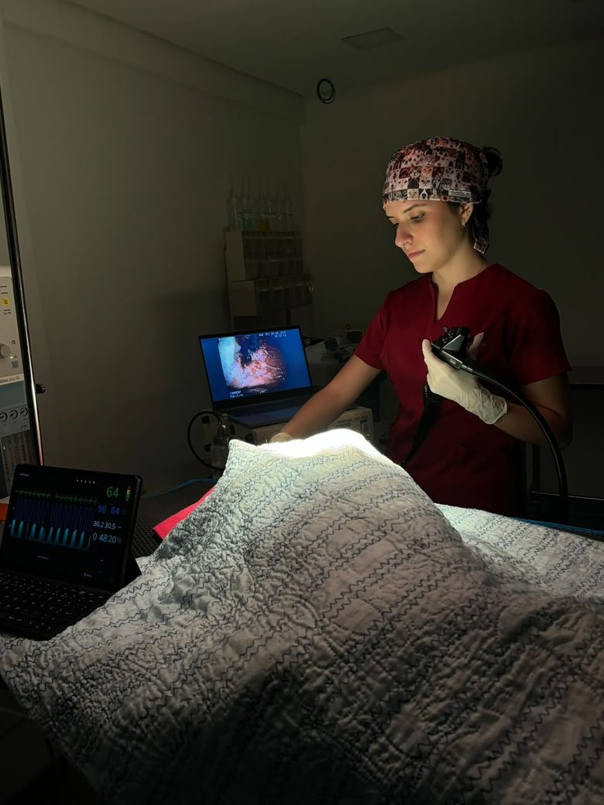

Vou até a sua clínica
Clínicas parceiras
Suporte técnico especializado para integrar a endoscopia à rotina da sua clínica, ampliando possibilidades e otimizando condutas.
- Procedimentos planejados e situações emergenciais
- Sem necessidade de estrutura própria de endoscopia
- Capital, Baixada, Interior e Região dos Lagos